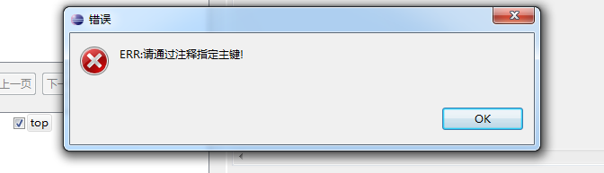
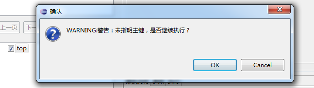

提示框标签.
提示框信息包含两种，警告提示，错误提示。
1、警告提示框:<ftl_warn></ftl_warn>
在预览或代码生产过程中,弹出该标签,即提示用户,是否继续执行.点击是继续执行,否就停止执行.
2、错误提示框:<ftl_err></ftl_err>
模板解析过程中，如果没达到模板所必备的条件，则弹出此框，弹出此框，则文档会停止执行或预览。
3、什么情况下使用提示框
一般用在执行准入校对判断，如下表示java文件中至少有个参数的isPk为Y的时候才能使用该模板。
eg:
在选中了top复选框后效果如下:

警告框用法类似，如下:
在选中了top复选框后效果如下:

与错误提示框不同的是，如果点击OK,预览框会继续显示"模板内容",点击Cancel，则预览框无内容显示，表示终止了执行。